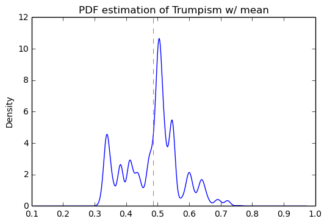

Scraping the Bottom of the Barrel
Introduction
For my web scraping project, I've chosen to extract some of the politics data from craigslist.org. My original ambition, though it proved difficult to affirm, was to prove a small, non-existant, or negative correllation of pro-trump chatter to expected conservatism. That is, I suspected that, somewhat counter-intuitively, the politics sections of more conservative states would a disproportionately less likely source of pro-trump posts. My basis for this suspicion was my general observation that less regulated areas for discussion on the internet tend to be very attractive to those members of a publically socially disparaged minority. Recognizing that, among other clues, Trump supporters in largely pro-Clinton geographic areas are disparaged for their support in amounts disproportionate to their surprisingly high representation, it followed that I could expect a surprising amount of pro-Trump (mostly trollish) chatter in mostly liberal places (e.g., New York City). The positive sentiment aspect of that hypothesis proved to be difficult to convincingly affirm. More generally, also I sought to analyze the trends of politcs discussion of craiglist, mostly in the area of text usage (capitalization, word frequency, etc) vs political leaning.

Methodology
To extract data from craigslist, I used the Python Scrapy package,
which was probably overkill. Originally, I intended to collect post
bodies as well as the titles, however this would require about 100
times as many request, too many for me to reponsibly exectute in a
reasonable amount of time. I resigned to limiting myself to titles,
which involved about 500 requests, spread over 5 hours, to obtain
roughly 40,000 posts titles/times. For each of these titles, there is
a corresponding state and region, with some regions additionally
divided into subregions (the New York City region, for example,
consists of Brooklyn, Queens, Manhattan, etc). Each post, its time and
its geographical origin are represented with a single row in a 40k row
Pandas DataFrame, usa. Data corruption was not an issue, as the CL
layout is quite uniform, though I did need to take into account data
redundancy (e.g., occaisionally "regions" are also "subregions" of
sibling regions). To make use of the extracted post title data, I
employed the 2010 U.S. census, which is available from
http://www.census.gov, as well as the 2016 election results data,
which I scraped from http://uselectionatlas.org/ using a BeautifulSoup
extraction script.
Preparing data
The craigslist extractor, written as a scrapy program, collected titles and dates, as well as the corresponding geographical designations. To keep it simple, these are all stored together as rows in a csv file.
Reading this data from craigcrawler's file:
38,692 total posts exctracted from 416 regions over 52 states. The most frequented state was 'California', and the most frequented region was, surprisingly, 'denver, CO'.
usa Sample
Sample of posts in the usa DataFrame before preprocessing, which is the DF for storing all CL politics posts:
| title | date | state | region | subregion | |
|---|---|---|---|---|---|
| 18708 | Let there be no confusion about the definition. | 2016-12-28 13:10 | Pennsylvania | york, PA | nan |
| 7369 | Trump't Music Video | 2016-11-30 15:57 | Michigan | detroit metro | macomb co |
| 14070 | re Crime facts | 2016-12-24 10:50 | California | los angeles | long beach / 562 |
U.S. Census 2010
Census Data
Census data is collected from U.S. Census Bureau for 2010 census. Here's a sample:
| state | population |
|---|---|
| Illinois | 1.28306e+07 |
| Michigan | 9.88364e+06 |
| Maryland | 5.77355e+06 |
| Mississippi | 2.9673e+06 |
U.S. 2016 Election
The 2016 Election results will be useful. They are grabbed from a really nice site, uselectionsatlas.org:
import requests from scrapy import Selector atlas_url = ("http://uselectionatlas.org/RESULTS/data.php?year" + "=2016&datatype=national&def=1&f=1&off=0&elect=0") atlas_source = requests.get(atlas_url).text select = Selector(text=atlas_source).xpath('//*[@id="datatable"]/tbody/tr') convert = lambda s: int(s.replace(',', '')) vote_names = map(str, select.xpath('td[3]/a/text()').extract()) # Correct name for DC vote_names[8] = "District of Columbia" clinton_votes = map(convert, select.xpath('td[17]/text()').extract()) trump_votes = map(convert, select.xpath('td[18]/text()').extract()) gen_votes = pd.DataFrame({"clinton": clinton_votes, "trump": trump_votes}, index=vote_names) # Dub a states Rebublican vote rate "trumpism" trump_favor = pd.DataFrame(gen_votes["trump"]/gen_votes.sum(axis=1), columns=["trumpism"], index=vote_names) voting = gen_votes.join(trump_favor).sort_values("trumpism", ascending=False) voting = voting.drop("District of Columbia")
Sample of voting table:
| clinton | trump | trumpism | |
|---|---|---|---|
| Wyoming | 55973 | 174419 | 0.757 |
| West Virginia | 188794 | 489371 | 0.722 |
| North Dakota | 93758 | 216794 | 0.698 |
| SPACE | ------ | ------ | ------ |
| Hawaii | 266891 | 128847 | 0.326 |
| California | 8753788 | 4483810 | 0.339 |
| Vermont | 178573 | 95369 | 0.348 |
Preprocess Data
A small bit of preprocessing to check data for corruption and unexpected results was necessary. There was no missing data, and no corruption. I suspected that I might encounter some amount of redundancy, but the extractor was written to exclude duplicated links, and it happened to be the case that CL keys areas unique across highly related (sub)regions (e.g., "long island" subregion and "long island, NY" region seem like they might be the same, but are actually completely distinct).
# Drop empty regions. Some regions are too small to have any posts. usa = usa_raw.dropna(subset=["title", "date"], how="any", axis=0) assert len(postless_regions) == len(usa_raw)-len(usa) # Get rid of territories (Guam, Puerto Rico). usa = usa[usa["state"] != "Territories"] # Get rid of "District of Columbia" usa = usa[usa["state"] != "District of Columbia"]
State Usage
Although the post data has attached a fairly fine-grain geographical description, I found the CL regions in general to not line up well with any census bureau categories. Moreover, even in the lucky event of such name correspondence, the division of regions was at least questionable. For example, by far the datasets most prominent "state" outliers, District of Columbia, has a census population of about 600k, yet a practical metropolitan area population in the several millions, a disparity that gross skews its contributions to state-wide statistics. Therefore, regions and subregions were largely found to be unmanageably tedious to consider seriously in any analysis. States, however, having relatively little variation between practical occupancy and census population, and have indisputable borders, barring District of Columbia, are ideal for inspection.
Terms
- Patronage Patronage is the raw number of posts on a politics board.
- Usage Usage is my measure for a states proportional interest in the politics board. It is simply the normalized ratio of patronage and state population.
- Trumpism
Trumpism is the name for a states republican vote percentage in the
general election. It is used as a rough measure of how pro-Trump
rate of a given state, and is a column in the
votingDataFrame, which is comprised of scraped data on the 2016 General Election results.
The state_usage table is the census table concatenated with patronage usage.
states Sample
Joining state_usage with voting gives us a decent top down view of
state political tendencies on CL.
states = state_usage.join(voting, how="left").sort_values("usage")
| state | patronage | population | usage | clinton | trump | trumpism |
|---|---|---|---|---|---|---|
| Tennessee | 487 | 6.34610e+06 | 0.132544 | 870695 | 1.52292e+06 | 0.636243 |
| Connecticut | 272 | 3.5741e+06 | 0.130803 | 897572 | 673215 | 0.428585 |
| Delaware | 100 | 897934 | 0.227191 | 235603 | 185127 | 0.440014 |
Outliers
There are two major outlying states in the dataset: Colorodo and District of Columbia.
Colorodo
We can see from the following that Colorado is an extreme outlier, being the fifth most popular state, yet the 23rd most populous.

Denver, as a region, is also especially large. Despite having a population of 650,000 people (and a metropolitcan area of 3 million), Denver sees a patronage of 1187. By comparison, the "new york city" region, which is expansive enough as to include metropolitan area subregions like "new jersey", "long island", "fairfield", etc, has fewer posts, at 1006.
1006 posts in NYC spread over: manhattan, brooklyn, queens, bronx, staten island, new jersey, long island, westchester, and fairfield. This is ~6.5% the usage rate of Denver
This is a remarkably popular region, clearly. I suspect that it has to do with the region granularity CL mostly likely arbitrarily assigned to the state. They might want to consider providing mode regions to the state of Colorado.
District of Columbia
While I found Colorado to be an inexplicable anamoly, it was also justifiably accurate. District of Columbia, having a Republican voting rate of ~4% and the usage similar to that of Colorado, coupled with it's unclear geographic distinction and population, meant its results were too extreme and variable to consider in analysis. Besides, it's not even a real state…
Patronage

We can get a feel for the usage distribution by taking a look at the
following sample from the state_usage table:
| patronage | population | usage | |
|---|---|---|---|
| Colorado | 1982 | 5029196 | 1.0 |
| Hawaii | 445 | 1360301 | 0.817 |
| Montana | 286 | 989415 | 0.713 |
| Oregon | 1094 | 3831074 | 0.703 |
| Nevada | 770 | 2700551 | 0.702 |
| SPACE | ------ | ------ | ------ |
| North Dakota | 19 | 672591 | 0.0 |
| Vermont | 18 | 625741 | 0.001 |
| Kansas | 106 | 2853118 | 0.024 |
| Wyoming | 22 | 563626 | 0.029 |
| New Jersey | 400 | 8791894 | 0.047 |
Seemingly some correlation between low population and low usage is evident from this table. However, the states for which the politics board is most popular are also fairly small. It may be that the popularity doesn't relate to state size, directly, but to political orientation, which itself correlated with state population. I suspect that political discussion is most charged currently in Democratic states, where discenting opinion is the that held by the triumphant party. It may also be that board popularity relation to patronage is non-linear. This correlation is explored more by some political investigation. However, first outliers must be determined and possibly removed from the data.
Usage

These are the PDF estimations for normalized patronage, population, usage. They are estimations, so they extend beyond 0 and 1 on the graph. Usage distribution is the ratio distribution of patronage and population.
min_norm = state_usage - state_usage.min() range_norm = state_usage.max() - state_usage.min() norm_usage = min_norm / range_norm norm_usage.plot(kind="density", title="Normalized PDF estimations", sharey=True)

We can see that usage has less variance than patronage and population, which we should expect. Perhaps it is somewhat more than expected, however.
Mean/median of normalized state usage metrics:
| mean | median | |
|---|---|---|
| patronage | 0.197488 | 0.0915567 |
| population | 0.152608 | 0.105552 |
| usage | 0.264764 | 0.20374 |
Here we can see illustrated what's been already hinted at: the states with the most and least usage are generally less populated and less patronaged, and, of course, there is a tight correlation between patronage and population. In the graph, redness relates to usage positively. The most red and most yellow dots are all in the least populated states/least patroned boards.

Politics
It seems that the distribution of posts is weighted on the Democrat's side of the spectrum:

However, Democratic registration outweighs Rebpublican voting rates slightly. We can visualize this preference a bit differently by finding the average post trumpism, and comparing it to national voting trends:
avg_post_trumpism = post_politics.trumpism.mean() trump_votes = voting.sum().trump clinton_votes = voting.sum().clinton national_trumpism = trump_votes/(trump_votes + clinton_votes)
It's a bit more clear here that the skew of trumpism distribution is weighted a bit on the left, though the mean is quite close to what's expected, at about 48% of Trump+Clinton votes. The skewness of distribution is expected, and in line with my original hypothesis; more liberal states can expect more discent from the socially charged Republican minority, while very Trump states have little inspiration for outcry. In general, it would seem the most divided states see the most traffic, with less divided having Democratic prominance. The mean in preserved by what seems to be in states that Trump won by a relatively small margin.
Mean trumpism: 48.42 Trump voters seem to show -1.17% representation on CL politics vs General Election results.
An alternative representation that may make this skew a bit more apparent:

Usage vs Trumpism
We can see the correlations between patronage, population, and usage, here. We of course expect correlation between patronage and population to be quite high: states with more people generally have more posts. However we see W Below, positive correlation is pictured by redness, while negative is pictures by blueness. Darkness visualizes closeness.

Note the correlation between trumpism and usage. Also, the correlation between patronage and usage coincides with how you'd expect boards with the least diversity to be disproportionately unfrequented. Boards with few posts become ghost towns. Here are the pearson correlation numbers behinds the colors:
| patronage | usage | trumpism | population | |
|---|---|---|---|---|
| patronage | 1 | 0.336 | -0.363 | 0.895 |
| usage | 0.336 | 1 | -0.302 | -0.008 |
| trumpism | -0.363 | -0.302 | 1 | -0.344 |
| population | 0.895 | -0.008 | -0.344 | 1 |
Text Qualities
Text usage is interesting to consider, but difficult to evaluate semantically. While sampling encourages some compelling thoughts about the data, proving any derivative ideas is a bit difficult. The following is an effort to support the introduction of this blog post.
Popular English words are excluded from the analysis. Words like "the", "re", "and", etc., don't contribute interestingly. Popular words were grabbed from http://www.world-english.org/english500.htm, and a couple were added as needed (e.g., "re" appears all the time).
Liberals vs Conservatives
Investigating the discrepency between democrat/republican word usage, we see the some discrepencies in the most used common words. Grab some words
lib_words = words(df=post_politics[post_politics.trumpism < .45], no_pop=True).rename("libs") conserv_words = words(df=post_politics[post_politics.trumpism > .55], no_pop=True).rename("conservs")
| counts | dem/rep ratio | |
|---|---|---|
| thought | 393 | 22.27 |
| 2017 | 230 | 9 |
| must | 142 | 8 |
| 11 | 128 | 7.45 |
| usa | 276 | 6.81 |
We find that "against", "how", and "won" have extreme preference for "liberal" states. The reasons are in fact not obvious. Some random sampling of such posts reveals possibly surprisingly pro-Trump sentiment:
| title | |
|---|---|
| 12992 | RufRydrRADIO=>LATEST Podcast=>"WE WON'T GET 'TOOLED' AGAIN"=>POP SONG |
| 28062 | Thought for the Day |
| 27429 | Thought for the Day |
| 6571 | I WONT SHED ONE TEAR ! you pukes made me suffer for 8 years ! |
| 28026 | Thought for the Day |
Looking at the general word sentiment, we see clearly that disproportionately Trump and Obama are discussed. Note that "hillary" and "clinton" are surprisingly not mentioned as much as you might think. "Clinton", in fact, is mentioned less freqeuntly than "Donald". It may be that a month after the election, "hillary" talk has already begun to significantly subside. It's impossible to know for sure, as CL does not hold on to their posts for longer than a week.

Unicode
I was curious about non-ascii usage, and so I used to following code to catch them.
def check_ascii(post): """ Determines whether a title is encodable as ascii """ try: post.encode('ascii') return True except UnicodeError: return False ascii_posts = usa[usa.title.apply(check_ascii)] nonascii_posts = usa[~usa.title.apply(check_ascii)] distinct_states = nonascii_posts["state"].unique()
The number of posts containing non-ascii characters was surprisingly small:
219 of 38,324 total posts were non-ascii (0.57%), confined to 22 states.
However, influence for these posts can be seen by looking at the main outlier, Pennsylvania:
pennsylvania = nonascii_posts[nonascii_posts["state"] == "Pennsylvania"] pennsylvania.groupby("region").count() penn_lenn = float(len(pennsylvania.title)) post_uniqueness = (penn_lenn-pennsylvania.title.nunique())/penn_lenn * 100
We can use a SequenceMatcher to test the similarity of the strings in the pool:
import itertools from difflib import SequenceMatcher def avg_similarity(posts): def similarity(a, b): return SequenceMatcher(None, a, b).ratio() sim_sum = 0 title_product = itertools.product(posts.title, posts.title) for title_pair in title_product: sim_sum += similarity(*title_pair) avg_sim = sim_sum/(len(posts)**2) return avg_sim
We then can run this over all non-ascii posts to get an idea of how much silliness is going on with these posts:
The average similarity of all non-ascii posts is 0.19, while that of only those in Pennsylvania is 0.38. The average for all posts in all regions is 0.19.
It would therefore seem that a single Trump memester, making use of a handful of unicode symbols, is responsible for this chaos in Pennsylvania. I suspect that these crazy unicode posts are mostly done by a very small set of people in general, though there is no good way to tell, as CL remains completely anonymous.
"trumps"
The more pro-Trump your state, the less likely you are to use "TRUMP" over "Trump". Below is a visual depicting this ratio, by states in order of trumpism. We can see that states on the right of the graph tend to have a low ratio of upper to proper. This isn't too surprising, as you expect, in leiu of social resistance, for pro-Trump regions to settle for respectful praise over excitement and hysteria, a general tone which is supported by some cursory sampling of these regions.

Looking at the distribution of "trump" posts across trumpism looks much the same as the distribution of all posts across trumpism:

However, Democratic states seem to have relatively strong preferance for using "TRUMP" versus "Trump". Below's graph depicts this skew, which is made more noticible by the considerable left-shift of the mean:

It isn't clear why there seems to be preference for capitalization of "TRUMP" among Dem states; are mostly angry and disparaging, supportive, or a bit of both? Some random sampling of particularly liberal states might provide some clues:
liberal_sample = trumps_trumpism[trumps_trumpism.trumpism < .45].sample(5)
Selecting states that are espectially anti-trump:
| trump | |
|---|---|
| 2470 | Trump win shatters Obama legacy |
| 14765 | Trump to bring private security staff to White House |
| 27604 | Trump Is Right about our Sevice Men! |
| 10989 | Trumps approach is actually more honest |
| 13495 | Love Trumps Hate Wall |
Politically liberal states composing the above sampling: Illinois, Massachusetts, New York, California.
"liberals" vs "conservatives"
- Usage
"liberal" is used far more often than "conservative". The pluralizations, respectively, are comparitively not quite as distinguished. This is expected, for previously mentioned reasons; pluralizations may still be used as a means to negatively generalize.
liberal/conservative: 18.07 liberals/conservatives: 5.16 liberal(s)/conservative(s): 10.14
- Pluralization
The singular version of "conservative" is used a bit more than half as much as the pluralization. By contrast, the singular version of "liberal" is used more than twice as much as the pluralization. I suspect this is because "liberal" is a perjorative in common nomenclature, while "conservative" doesn't really hold the same weight as an insult:
*singular/plural* 'conservative': 0.628 'liberal': 2.198 - Capitalization
We here see that, among democrats, "liberal" is capitalized at a rate 13x greater than the rate of capitalization of "conservative". We also see that lowecase usage preference is completely neglible.
lib_cap = eval_strs("trump").sum(numeric_only=True) conserv_cap = eval_strs("liberal").sum(numeric_only=True) lib_con_cap_rat = (lib_cap/conserv_cap).rename( "Dem/Rep capital rates for 'trump'")
Dem/Rep capital rates for 'trump' proper 10.5951 uppercase 13.4286 lower 1.07721
Semantics
I figured that a natural way to go about proving my hypothesis outlined in this blog's introduction would be semantic analysis. I quickly decided that this was, with it's present implementation, at least, not the way to go about it. The following code will run semantic analysis using the popular NLTK package. The results are dubious.
from textblob import TextBlob def semants(text): blob = TextBlob(text) ss = 0 for sentence in blob.sentences: ss += sentence.sentiment.polarity return float(ss)/len(blob.sentences) # package does not like non-ascii encodings trumps_ascii = trumps[trumps["*trump*"].apply(check_ascii)] usa_sentiment = post_politics.join(ascii_posts.title.apply( semants).rename("sentiment")) trumps_sentiment = usa_sentiment.filter(trumps_ascii.index, axis=0)
However, the results, and general output of the semantic analyzer, were quite unconvincing, even if only interpreted as a binary measure:
zero_sents = len(usa_sentiment[usa_sentiment.sentiment == 0]) print(('Number of posts with 0 sentiment: {0:,} ' + '({1:.2f}%).').format(zero_sents, float(zero_sents)/len(usa_sentiment)*100))
Number of posts with 0 sentiment: 25,632 (66.88%).
Conclusion
The distribution posts and the favor of those posts across the politics sections is somewhat surprising. I suspect that this is evidence of cultural normalization in the face of resistance+anonimity: faceless, nameless interaction coupled with outspokenness against relatively strict local social norms. This has proven more difficult to prove than I initially suspected. While any amount of ransom sampling of the posts allows me to be confident in this theory, convincing proof would most likely involve a tedious, exhausive effort.
Notes about this document
This document is, in its original form, an emacs org-mode organizational markup document that supports interactive programming and exporting quite thoroughly. It exports to a variety of formats (html, latex, markdown, etc), and in this case, was exported directly to html. It's quite powerful, and allows me to tailor what headers are exported, what code is exported, what code results, to what interpreter the code talks, how it's formated, etc. The original document, if viewed in org-mode in emacs, is quite a bit larger, containing all of the code used for the project, most of which is not shown in markdown exports. Therefore, if you view this document on github, you will see a truncated version much like the version you are likely viewing now. You can view on github, a .ipynb and a .py export are available for the complete code of the document. Obviously, they won't include the organization and commentary. You can look at the raw contents of the .org file if curious (github will export primitively to html by default for display), or check out this blog on interactive python programming in emacs org-mode.